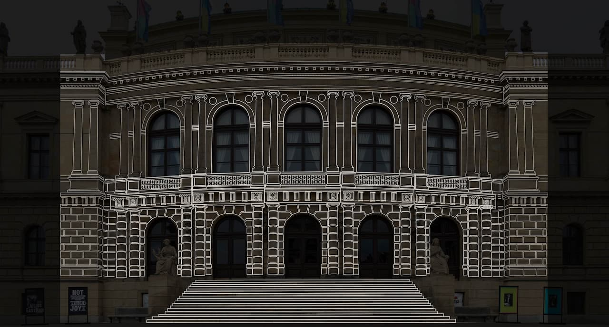
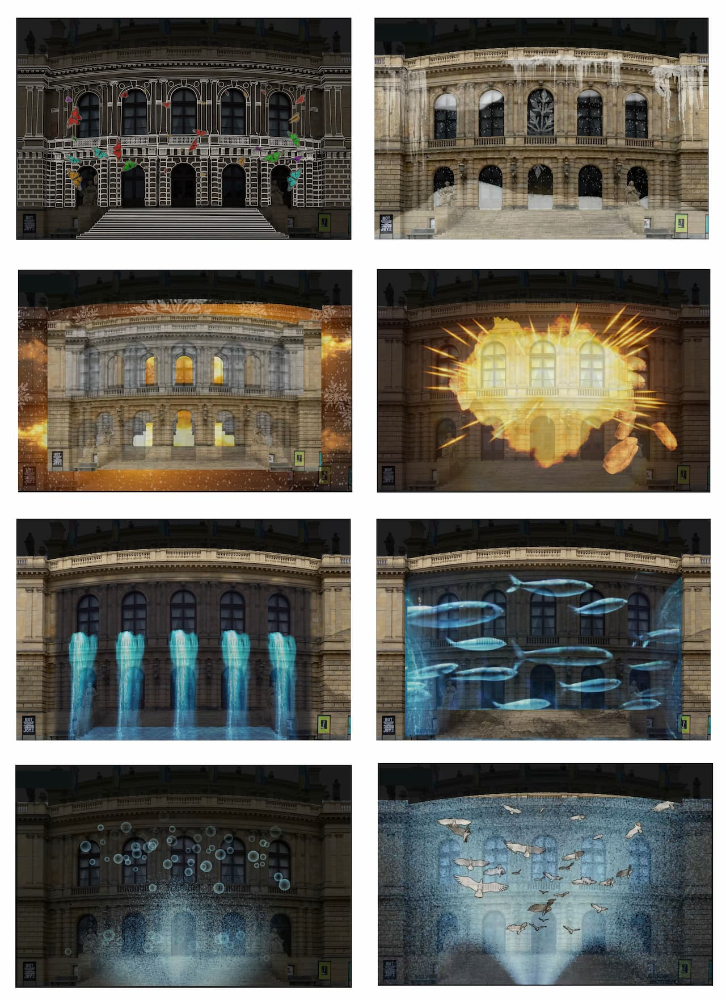

Odkaz Karla Gotta - video mapping
Unikátní multimediální autorský umělecký projekt Zdeňky Čechové, Odkaz Karla Gotta - video mapping, na koncertní budovu Rudolfina, je originální audiovizuální projekt k poctě Karla Gotta. Celý projekt je podkreslen skladbou Žít, skladatele Karla Svobody a textaře Karla Šípa. Obrazové scény, které promlouvají k oslavě života, míru a zdraví naší planety Země, jsou protkány náročnými počítačovými efekty a animacemi.
Vizualizované pauzy, mezi opakovanými audiovizuálními projekcemi, umožňují aktivní zapojení diváka prostřednictvím mobilů.
 